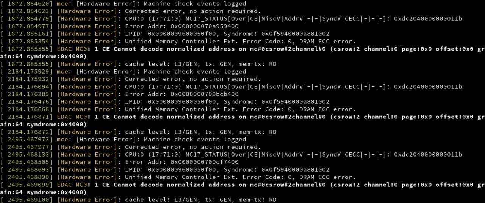

家用灵车
虚拟化技术指北
- 硬件选择
CPU、主板、内存、
GPU空气 - 软件配置
qemu、OVMF、声音、输入设备等
我的硬件配置
- CPU
- 主板
- 内存:
2x16GB 3200MHz2x32GB 3200MHz ECC - GPU:
GTX 1050GTX 1650 SUPER
LSI SAS 9300-8i HBA 卡

PCIe 3.0x8、~150 CNY
我的软件配置
- 物理机: Debian 10、ZFS on LUKS、rtorrent、samba、syncthing
- 虚拟机
- 一个 Gentoo Linux 虚拟机
- 一个 Windows 虚拟机
为何不使用双系统？
- 双系统切换需要重启
需要解锁 LUKS、无法保持服务不中断运行
- Windows 下难以使用 ZFS 和 LUKS
硬件选择
IOMMU+Hardware Virtualization
IOMMU
Input-Output Memory Management Unit

CPU
- 需要支持 IOMMU 和 Hardware Virtualization
- IOMMU 的不同名字: Intel VT-d 和 AMD-Vi
- 在
/proc/cpuinfo中的flagsvmx代表支持 Intel VT-dsvm代表支持 AMD-Vi
- 新一点的硬件都支持
主板
- 需要支持 IOMMU
- 新一点的硬件都支持
- 可以在网络上提前搜索主板的 IOMMU Group 配置
ECC 内存？
- 需要 CPU 和主板都支持
- 无核显或者有核显且带 PRO 的 AMD Ryzen™ CPU 均支持 ECC UDIMM 内存
- ASUS 和 ASRock 的 B550 和 X570 系列支持 ECC
购买主板前建议去官网检查一下，例如可能对于频率还有额外的要求

它的确是工作的
Intel 和 ECC
立即购买 Intel® Core™ i3 processor
ECC Memory Supported ‡: Yes
支持 ECC UDIMM 内存
PCIE？
- AMD 的 B{3,4,5}50 系列主板
- PCIe {3,4}.0x16 用于插 GPU
- PCIe {3,4}.0x4 用于插 NVMe SSD
- Intel 的 CPU 可能只有 16 条 PCIe 3.0 lanes
但是也可能有 20 条
PCIe Bifurcation？
- 可以将 PCIe x16 拆分成 x8+x8 甚至 x8+x4+x4
- 可以用于满足灵车需求: 家用平台的双卡丹炉

能不能再给力一点
能: PLX SWITCH

NVIDIA GTX 690

由于 PLX switch 过于企业级，这样的家用消费级主板应该还不存在
主板风扇？

Buy yourself a B550 please XD
GPU
NVIDIA 的显卡几乎总是工作的
Along with today's NVIDIA 465 series Linux beta an exciting shift at the company is they are now supporting accelerated GPU access by VMs with their GeForce consumer GPUs. 来源
支持“热插拔”
AMD GPU？
- 不支持“热插拔” vendor-reset
- Linux 下的驱动质量一般
- 但是对于 GPU passthrough 来说，应当也工作
软件配置
推荐阅读 ArchWiki 的 PCI passthrough via OVMF 词条主板 BIOS 有关设置
- 需要在 BIOS 中开启硬件虚拟化支持和 IOMMU 支持
- 具体设置方法和主板有关
HOST 配置
推荐使用 Debian
通过 GRUB 启用 Linux 的 IOMMU 支持
向 /etc/default/grub 中的 GRUB_CMDLINE_LINUX 添加选项
- AMD:
amd_iommu=on iommu=pt - Intel:
intel_iommu=on iommu=pt
更新 grub 配置并重启
检查 IOMMU Groups
来自 ArchWiki样例输出
配置 vfio-pci
- 向
/etc/default/grub中的GRUB_CMDLINE_LINUX添加选项 - 可能需要在 initramfs 中加载
vfio-pci驱动对于 Debian 系，向
/etc/initramfs-tools/modules中添加
然后update-initramfs -u -k all并重启
检查 vfio-pci 是否配置正确
lspci -kk
配置虚拟机
安装 qemu 和 ovmf 后
(虚拟)磁盘？
推荐使用 virtio-scsi 来将 host 上的块设备传给虚拟机
网络？
推荐使用 virtio
host 上配套的
输入设备？
方案一: 使用 evdev
方案二: 使用 USB passthrough
AMD Ryzen™ 有 CPU 提供的 USB 接口，可以 PCIe 直通给虚拟机使用
声音？
- 方案一: scream
- 方案二: 配置 USB 直通，使用 USB DAC 设备或 USB 蓝牙适配器连接蓝牙耳机
内存大页？
qemu在开启了透明大页支持的系统中，会自动通过madvice使用 2MiB 的大页- 也可以手动配置 1GiB 的大页
通过 grub 添加 hugepagesz=1G hugepages=48 内核选项
虚拟机安装要点
对于 Windows 虚拟机，如果使用了 virtio 设备，请准备好 virtio 的驱动盘镜像，并在安装时挂载到虚拟 CDROM
如果磁盘是 thin allocation 的，可以注意匹配一下虚拟机文件系统的 allocation unit 和 thin allocation unit，以及开启 TRIM
- 对于 NTFS，可以支持上至 2MiB 的 allocation unit
- 对于 XFS 等 Linux 下的文件系统，通常有 RAID stripe width 相关选项
例如 XFS 的
sunit=128,swidth=128
Looking Glass
解决的问题: 在有第二个显卡的情况下(例如核显)，使用这张显卡输出 Windows 虚拟机画面